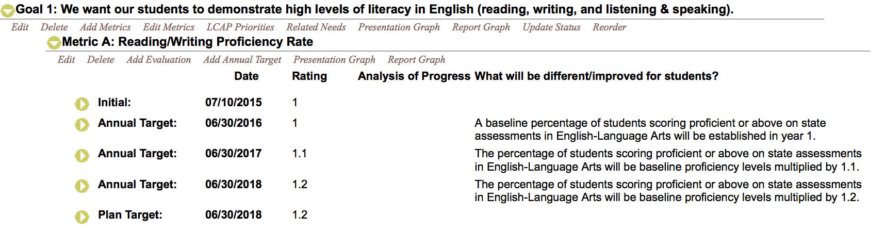

<div class='infoPanel infoBgcolorBlue' id='usefulPlanning' title='LCAP and Useful, too'>

<div class='headline'>
Automatic Report and a Real Plan, too
</div>

<div class='infoContainer narrowWindowDeleteIdClass general_H60vhWauto_HautoWauto' style=''>


<div class='subtitle' style='top:9vh;left:3vw;'>
<pp class='infoBgcolorBlue'>Objectives organized by Goal</pp>
<pp class='infoBgcolorBlue'>Actions/Services organized by Objective</pp>
<pp class='infoBgcolorBlue'>Budgets organized by Action</pp>
</div>


<div class='example ' style='top:31vh;left:7vw;'>
	<div class='title'>
	Goals with Measurable Status and Metrics
	</div>
	 
</div>


</div>

<div class='punchline'>Real, Accountable Planning</div>

</div>